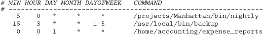
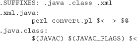
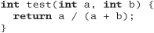
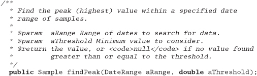

As your project gets under way, we need to move away from issues of individual philosophy and coding to talk about larger, project-sized issues. We aren't going to go into specifics of project management, but we will talk about a handful of critical areas that can make or break any project.
As soon as you have more than one person working on a project, you need to establish some ground rules and delegate parts of the project accordingly. In Pragmatic Teams, we'll show how to do this while honoring the pragmatic philosophy.
The single most important factor in making project-level activities work consistently and reliably is to automate your procedures. We'll explain why, and show some real-life examples in Ubiquitous Automation.
Earlier, we talked about testing as you code. In Ruthless Testing, we go to the next step of project-wide testing philosophy and tools—especially if you don't have a large QA staff at your beck and call.
The only thing that developers dislike more than testing is documentation. Whether you have technical writers helping you or are doing it on your own, we'll show you how to make the chore less painful and more productive in It's All Writing.
Success is in the eye of the beholder—the sponsor of the project. The perception of success is what counts, and in Great Expectations we'll show you some tricks to delight every project's sponsor.
The last tip in the book is a direct consequence of all the rest. In Pride and Prejudice, we encourage you to sign your work, and to take pride in what you do.
At Group L, Stoffel oversees six first-rate programmers, a managerial challenge roughly comparable to herding cats.
• The Washington Post Magazine, June 9, 1985
So far in this book we've looked at pragmatic techniques that help an individual be a better programmer. Can these methods work for teams as well?
The answer is a resounding "yes!" There are advantages to being a pragmatic individual, but these advantages are multiplied manyfold if the individual is working on a pragmatic team.
In this section we'll look briefly at how pragmatic techniques can be applied to teams as a whole. These notes are only a start. Once you've got a group of pragmatic developers working in an enabling environment, they'll quickly develop and refine their own team dynamics that work for them.
Let's recast some of the previous sections in terms of teams.
Quality is a team issue. The most diligent developer placed on a team that just doesn't care will find it difficult to maintain the enthusiasm needed to fix niggling problems. The problem is further exacerbated if the team actively discourages the developer from spending time on these fixes.
Teams as a whole should not tolerate broken windows—those small imperfections that no one fixes. The team must take responsibility for the quality of the product, supporting developers who understand the no broken windows philosophy we describe in Software Entropy, page 4, and encouraging those who haven't yet discovered it.
Some team methodologies have a quality officer—someone to whom the team delegates the responsibility for the quality of the deliverable. This is clearly ridiculous: quality can come only from the individual contributions of all team members.
Remember the poor frog in the pan of water, back in Stone Soup and Boiled Frogs, page 7? It doesn't notice the gradual change in its environment, and ends up cooked. The same can happen to individuals who aren't vigilant. It can be difficult to keep an eye on your overall environment in the heat of project development.
It's even easier for teams as a whole to get boiled. People assume that someone else is handling an issue, or that the team leader must have OK'd a change that your user is requesting. Even the best-intentioned teams can be oblivious to significant changes in their projects.
Fight this. Make sure everyone actively monitors the environment for changes. Maybe appoint a chief water tester. Have this person check constantly for increased scope, decreased time scales, additional features, new environments—anything that wasn't in the original agreement. Keep metrics on new requirements (see page 209). The team needn't reject changes out of hand—you simply need to be aware that they're happening. Otherwise, it'll be you in the hot water.
It's obvious that developers in a team must talk to each other. We gave some suggestions to facilitate this in Communicate! on page 18. However, it's easy to forget that the team itself has a presence within the organization. The team as an entity needs to communicate clearly with the rest of the world.
To outsiders, the worst project teams are those that appear sullen and reticent. They hold meetings with no structure, where no one wants to talk. Their documents are a mess: no two look the same, and each uses different terminology.
Great project teams have a distinct personality. People look forward to meetings with them, because they know that they'll see a well-prepared performance that makes everyone feel good. The documentation they produce is crisp, accurate, and consistent. The team speaks with one voice.[1] They may even have a sense of humor.
[1] The team speaks with one voice—externally. Internally, we strongly encourage lively, robust debate. Good developers tend to be passionate about their work.
There is a simple marketing trick that helps teams communicate as one: generate a brand. When you start a project, come up with a name for it, ideally something off-the-wall. (In the past, we've named projects after things such as killer parrots that prey on sheep, optical illusions, and mythical cities.) Spend 30 minutes coming up with a zany logo, and use it on your memos and reports. Use your team's name liberally when talking with people. It sounds silly, but it gives your team an identity to build on, and the world something memorable to associate with your work.
In The Evils of Duplication, page 26, we talked about the difficulties of eliminating duplicated work between members of a team. This duplication leads to wasted effort, and can result in a maintenance nightmare. Clearly good communication can help here, but sometimes something extra is needed.
Some teams appoint a member as the project librarian, responsible for coordinating documentation and code repositories. Other team members can use this person as the first port of call when they're looking for something. A good librarian will also be able to spot impending duplication by reading the material that they're handling.
When the project's too big for one librarian (or when no one wants to play the role), appoint people as focal points for various functional aspects of the work. If people want to talk over date handling, they should know to talk with Mary. If there's a database schema issue, see Fred.
And don't forget the value of groupware systems and local Usenet newsgroups for communicating and archiving questions and answers.
Traditional team organization is based on the old-fashioned waterfall method of software construction. Individuals are assigned roles based on their job function. You'll find business analysts, architects, designers, programmers, testers, documenters, and the like.[2] There is an implicit hierarchy here—the closer to the user you're allowed, the more senior you are.
[2] In The Rational Unified Process: An Introduction, the author identifies 27 separate roles within a project team! [Kru98]
Taking things to the extreme, some development cultures dictate strict divisions of responsibility; coders aren't allowed to talk to testers, who in turn aren't allowed to talk to the chief architect, and so on. Some organizations then compound the problem by having different subteams report through separate management chains.
It is a mistake to think that the activities of a project—analysis, design, coding, and testing—can happen in isolation. They can't. These are different views of the same problem, and artificially separating them can cause a boatload of trouble. Programmers who are two or three levels removed from the actual users of their code are unlikely to be aware of the context in which their work is used. They will not be able to make informed decisions.
Tip 60
Organize Around Functionality, Not Job Functions
We favor splitting teams functionally. Divide your people into small teams, each responsible for a particular functional aspect of the final system. Let the teams organize themselves internally, building on individual strengths as they can. Each team has responsibilities to others in the project, as defined by their agreed-upon commitments. The exact set of commitments changes with each project, as does the allocation of people into teams.
Functionality here does not necessarily mean end-user use cases. The database access layer counts, as does the help subsystem. We're looking for cohesive, largely self-contained teams of people—exactly the same criteria we should be using when we modularize code. There are warning signs that the team organization is wrong—a classic example is having two subteams working on the same program module or class.
How does this functional style of organization help? Organize our resources using the same techniques we use to organize code, using techniques such as contracts (Design by Contract, page 109), decoupling (Decoupling and the Law of Demeter, page 138), and orthogonality (Orthogonality, page 34), and we help isolate the team as a whole from the effects of change. If the user suddenly decides to change database vendors, only the database team should be affected. Should marketing suddenly decide to use an off-the-shelf tool for the calendar function, the calendar group takes a hit. Properly executed, this kind of group approach can dramatically reduce the number of interactions between individuals' work, reducing time scales, increasing quality, and cutting down on the number of defects. This approach can also lead to a more committed set of developers. Each team knows that they alone are responsible for a particular function, so they feel more ownership of their output.
However, this approach works only with responsible developers and strong project management. Creating a pool of autonomous teams and letting them loose without leadership is a recipe for disaster. The project needs at least two "heads"—one technical, the other administrative. The technical head sets the development philosophy and style, assigns responsibilities to teams, and arbitrates the inevitable "discussions" between people. The technical head also looks constantly at the big picture, trying to find any unnecessary commonality between teams that could reduce the orthogonality of the overall effort. The administrative head, or project manager, schedules the resources that the teams need, monitors and reports on progress, and helps decide priorities in terms of business needs. The administrative head might also act as the team's ambassador when communicating with the outside world.
Teams on larger projects need additional resources: a librarian who indexes and stores code and documentation, a tool builder who provides common tools and environments, operational support, and so on.
This type of team organization is similar in spirit to the old chief programmer team concept, first documented in 1972 [Bak72].
A great way to ensure both consistency and accuracy is to automate everything the team does. Why lay code out manually when your editor can do it automatically as you type? Why complete test forms when the overnight build can run tests automatically?
Automation is an essential component of every project team—important enough for us to dedicate an entire section to it, starting on the following page. To ensure that things get automated, appoint one or more team members as tool builders to construct and deploy the tools that automate the project drudgery. Have them produce makefiles, shell scripts, editor templates, utility programs, and the like.
Remember that teams are made up of individuals. Give each member the ability to shine in his or her own way. Give them just enough structure to support them and to ensure that the project delivers against its requirements. Then, like the painter in Good-Enough Software, page 11, resist the temptation to add more paint.
Civilization advances by extending the number of important operations we can perform without thinking.
• Alfred North Whitehead
At the dawn of the age of automobiles, the instructions for starting a Model-T Ford were more than two pages long. With modern cars, you just turn the key—the starting procedure is automatic and foolproof. A person following a list of instructions might flood the engine, but the automatic starter won't.
Although computing is still an industry at the Model-T stage, we can't afford to go through two pages of instructions again and again for some common operation. Whether it is the build and release procedure, code review paperwork, or any other recurring task on the project, it has to be automatic. We may have to build the starter and fuel injector from scratch, but once it's done, we can just turn the key from then on.
In addition, we want to ensure consistency and repeatability on the project. Manual procedures leave consistency up to chance; repeatability isn't guaranteed, especially if aspects of the procedure are open to interpretation by different people.
We were once at a client site where all the developers were using the same IDE. Their system administrator gave each developer a set of instructions on installing add-on packages to the IDE. These instructions filled many pages—pages full of click here, scroll there, drag this, double-click that, and do it again.
Not surprisingly, every developer's machine was loaded slightly differently. Subtle differences in the application's behavior occurred when different developers ran the same code. Bugs would appear on one machine but not on others. Tracking down version differences of any one component usually revealed a surprise.
Tip 61
People just aren't as repeatable as computers are. Nor should we expect them to be. A shell script or batch file will execute the same instructions, in the same order, time after time. It can be put under source control, so you can examine changes to the procedure over time as well ("but it used to work...").
Another favorite tool of automation is cron (or "at" on Windows NT). It allows us to schedule unattended tasks to run periodically—usually in the middle of the night. For example, the following crontab file specifies that a project's nightly command be run at five minutes past midnight every day, that the backup be run at 3:15 a.m. on weekdays, and that expense_reports be run at midnight on the first of the month.

Using cron, we can schedule backups, the nightly build, Web site maintenance, and anything else that needs to be done—unattended, automatically.
Compiling the project is a chore that should be reliable and repeatable. We generally compile projects with makefiles, even when using an IDE environment. There are several advantages in using makefiles. It is a scripted, automatic procedure. We can add in hooks to generate code for us, and run regression tests automatically. IDEs have their advantages, but with IDEs alone it can be hard to achieve the level of automation that we're looking for. We want to check out, build, test, and ship with a single command.
In The Evils of Duplication, page 26, we advocated generating code to derive knowledge from common sources. We can exploit make's dependency analysis mechanism to make this process easy. It's a pretty simple matter to add rules to a makefile to generate a file from some other source automatically. For example, suppose we wanted to take an XML file, generate a Java file from it, and compile the result.

Type make test.class, and make will automatically look for a file named test.xml, build a .java file by running a Perl script, and then compile that file to produce test.class.
We can use the same sort of rules to generate source code, header files, or documentation automatically from some other form as well (see Code Generators, page 102).
You can also use the makefile to run regression tests for you, either for an individual module or for an entire subsystem. You can easily test the entire project with just one command at the top of the source tree, or you can test an individual module by using the same command in a single directory. See Ruthless Testing, page 237, for more on regression testing.
A build is a procedure that takes an empty directory (and a known compilation environment) and builds the project from scratch, producing whatever you hope to produce as a final deliverable—a CD-ROM master image or a self-extracting archive, for instance. Typically a project build will encompass the following steps.
[3] If you are producing a CD-ROM in ISO9660 format, for example, you would run the program that produces a bit-for-bit image of the 9660 file system. Why wait until the night before you ship to make sure it works?
make test).For most projects, this level of build is run automatically every night. In this nightly build, you will typically run more complete tests than an individual might run while building some specific portion of the project. The important point is to have the full build run all available tests. You want to know if a regression test failed because of one of today's code changes. By identifying the problem close to the source, you stand a better chance of finding and fixing it.
When you don't run tests regularly, you may discover that the application broke due to a code change made three months ago. Good luck finding that one.
Final builds, which you intend to ship as products, may have different requirements from the regular nightly build. A final build may require that the repository be locked, or tagged with the release number, that optimization and debug flags be set differently, and so on. We like to use a separate make target (such as make final) that sets all of these parameters at once.
Remember that if the product is compiled differently from earlier versions, then you must test against this version all over again.
Wouldn't it be nice if programmers could actually devote all of their time to programming? Unfortunately, this is rarely the case. There is e-mail to be answered, paperwork to be filled out, documents to be posted to the Web, and so on. You may decide to create a shell script to do some of the dirty work, but you still have to remember to run the script when needed.
Because memory is the second thing you lose as you age,[4] we don't want to rely on it too heavily. We can run scripts to perform procedures for us automatically, based on the content of source code and documents. Our goal is to maintain an automatic, unattended, content-driven workflow.
[4] What's the first? I forget.
Many development teams use an internal Web site for project communication, and we think this is a great idea. But we don't want to spend too much time maintaining the Web site, and we don't want to let it get stale or out of date. Misleading information is worse than no information at all.
Documentation that is extracted from code, requirements analyses, design documents, and any drawings, charts, or graphs all need to be published to the Web on a regular basis. We like to publish these documents automatically as part of the nightly build or as a hook into the source code check-in procedure.
However it is done, Web content should be generated automatically from information in the repository and published without human intervention. This is really another application of the DRY principle: information exists in one form as checked-in code and documents. The view from the Web browser is simply that—just a view. You shouldn't have to maintain that view by hand.
Any information generated by the nightly build should be accessible on the development Web site: results of the build itself (for example, the build results might be presented as a one-page summary that includes compiler warnings, errors, and current status), regression tests, performance statistics, coding metrics and any other static analysis, and so on.
Some projects have various administrative workflows that must be followed. For instance, code or design reviews need to be scheduled and followed through, approvals may need to be granted, and so on. We can use automation—and especially the Web site—to help ease the paperwork burden.
Suppose you wanted to automate code review scheduling and approval. You might put a special marker in each source code file:
/* Status: needs_review */
A simple script could go through all of the source code and look for all files that had a status of needs_review, indicating that they were ready to be reviewed. You could then post a list of those files as a Web page, automatically send e-mail to the appropriate people, or even schedule a meeting automatically using some calendar software.
You can set up a form on a Web page for the reviewers to register approval or disapproval. After the review, the status can be automatically changed to reviewed. Whether you have a code walk-through with all the participants is up to you; you can still do the paperwork automatically. (In an article in the April 1999 CACM, Robert Glass summarizes research that seems to indicate that, while code inspection is effective, conducting reviews in meetings is not [Gla99a].)
The cobbler's children have no shoes. Often, people who develop software use the poorest tools to do the job.
But we have all the raw materials we need to craft better tools. We have cron. We have make, Ant, and CruiseControl for automation (see [Cla04]). And we have Ruby, Perl, and other high-level scripting languages for quickly developing custom tools, Web page generators, code generators, test harnesses, and so on.
Let the computer do the repetitious, the mundane—it will do a better job of it than we would. We've got more important and more difficult things to do.
[5] For estimating purposes, you can figure an industry average of about US$100,000 per head—that's salary plus benefits, training, office space and overhead, and so on.
Most developers hate testing. They tend to test gently, subconsciously knowing where the code will break and avoiding the weak spots. Pragmatic Programmers are different. We are driven to find our bugs now, so we don't have to endure the shame of others finding our bugs later.
Finding bugs is somewhat like fishing with a net. We use fine, small nets (unit tests) to catch the minnows, and big, coarse nets (integration tests) to catch the killer sharks. Sometimes the fish manage to escape, so we patch any holes that we find, in hopes of catching more and more slippery defects that are swimming about in our project pool.
Tip 62
Test Early. Test Often. Test Automatically.
We want to start testing as soon as we have code. Those tiny minnows have a nasty habit of becoming giant, man-eating sharks pretty fast, and catching a shark is quite a bit harder. But we don't want to have to do all that testing by hand.
Many teams develop elaborate test plans for their projects. Sometimes they will even use them. But we've found that teams that use automated tests have a much better chance of success. Tests that run with every build are much more effective than test plans that sit on a shelf.
The earlier a bug is found, the cheaper it is to remedy. "Code a little, test a little" is a popular saying in the Smalltalk world,[6] and we can adopt that mantra as our own by writing test code at the same time (or even before) we write the production code.
[6] eXtreme Programming [URL 45] calls this concept "continuous integration, relentless testing."
In fact, a good project may well have more test code than production code. The time it takes to produce this test code is worth the effort. It ends up being much cheaper in the long run, and you actually stand a chance of producing a product with close to zero defects.
Additionally, knowing that you've passed the test gives you a high degree of confidence that a piece of code is "done."
Tip 63
Coding Ain't Done 'Til All the Tests Run
Just because you have finished hacking out a piece of code doesn't mean you can go tell your boss or your client that it's done. It's not. First of all, code is never really done. More importantly, you can't claim that it is usable by anyone until it passes all of the available tests.
We need to look at three main aspects of project-wide testing: what to test, how to test, and when to test.
There are several major types of software testing that you need to perform:
This list is by no means complete, and some specialized projects will require various other types of testing as well. But it gives us a good starting point.
A unit test is code that exercises a module. We covered this topic by itself in Code That's Easy to Test, page 189. Unit testing is the foundation of all the other forms of testing that we'll discuss in this section. If the parts don't work by themselves, they probably won't work well together. All of the modules you are using must pass their own unit tests before you can proceed.
Once all of the pertinent modules have passed their individual tests, you're ready for the next stage. You need to test how all the modules use and interact with each other throughout the system.
Integration testing shows that the major subsystems that make up the project work and play well with each other. With good contracts in place and well tested, any integration issues can be detected easily. Otherwise, integration becomes a fertile breeding ground for bugs. In fact, it is often the single largest source of bugs in the system.
Integration testing is really just an extension of the unit testing we've described—only now you're testing how entire subsystems honor their contracts.
As soon as you have an executable user interface or prototype, you need to answer an all-important question: the users told you what they wanted, but is it what they need?
Does it meet the functional requirements of the system? This, too, needs to be tested. A bug-free system that answers the wrong question isn't very useful. Be conscious of end-user access patterns and how they differ from developer test data (for an example, see the story about brush strokes on page 92).
Now that you have a pretty good idea that the system will behave correctly under ideal conditions, you need to discover how it will behave under real-world conditions. In the real world, your programs don't have limitless resources; they run out of things. A few limits your code may encounter include:
You might actually check for disk space or memory allocation failures, but how often do you test for the others? Will your application fit on a 640 x 480 screen with 256 colors? Will it run on a 1600 x 1280 screen with 24-bit color without looking like a postage stamp? Will the batch job finish before the archive starts?
You can detect environmental limitations, such as the video specifications, and adapt as appropriate. Not all failures are recoverable, however. If your code detects that memory has been exhausted, your options are limited: you may not have enough resources left to do anything except fail.
When the system does fail,[7] will it fail gracefully? Will it try, as best it can, to save its state and prevent loss of work? Or will it "GPF" or "core-dump" in the user's face?
[7] Our copy editor wanted us to change this sentence to "If the system does fail...." We resisted.
Performance testing, stress testing, or testing under load may be an important aspect of the project as well.
Ask yourself if the software meets the performance requirements under real-world conditions—with the expected number of users, or connections, or transactions per second. Is it scalable?
For some applications, you may need specialized testing hardware or software to simulate the load realistically.
Usability testing is different from the types of testing discussed so far. It is performed with real users, under real environmental conditions.
Look at usability in terms of human factors. Were there any misunderstandings during requirements analysis that need to be addressed? Does the software fit the user like an extension of the hand? (Not only do we want our own tools to fit our hands, but we want the tools we create for users to fit their hands as well.)
As with validation and verification, you need to perform usability testing as early as you can, while there is still time to make corrections. For larger projects, you may want to bring in human factors specialists. (If nothing else, it's fun to play with the one-way mirrors).
Failure to meet usability criteria is just as big a bug as dividing by zero.
We've looked at what to test. Now we'll turn our attention to how to test, including:
A regression test compares the output of the current test with previous (or known) values. We can ensure that bugs we fixed today didn't break things that were working yesterday. This is an important safety net, and it cuts down on unpleasant surprises.
All of the tests we've mentioned so far can be run as regression tests, ensuring that we haven't lost any ground as we develop new code. We can run regressions to verify performance, contracts, validity, and so on.
Where do we get the data to run all these tests? There are only two kinds of data: real-world data and synthetic data. We actually need to use both, because the different natures of these kinds of data will expose different bugs in our software.
Real-world data comes from some actual source. Possibly it has been collected from an existing system, a competitor's system, or a prototype of some sort. It represents typical user data. The big surprises come as you discover what typical means. This is most likely to reveal defects and misunderstandings in requirements analysis.
Synthetic data is artificially generated, perhaps under certain statistical constraints. You may need to use synthetic data for any of the following reasons.
Testing GUI-intensive systems often requires specialized testing tools. These tools may be based on a simple event capture/playback model, or they may require specially written scripts to drive the GUI. Some systems combine elements of both.
Less sophisticated tools enforce a high degree of coupling between the version of software being tested and the test script itself: if you move a dialog box or make a button smaller, the test may not be able to find it, and may fail. Most modern GUI testing tools use a number of different techniques to get around this problem, and try to adjust to minor layout differences.
However, you can't automate everything. Andy worked on a graphics system that allowed the user to create and display nondeterministic visual effects which simulated various natural phenomena. Unfortunately, during testing you couldn't just grab a bitmap and compare the output with a previous run, because it was designed to be different every time. For situations such as this one, you may have no choice but to rely on manual interpretation of test results.
One of the many advantages of writing decoupled code (see Decoupling and the Law of Demeter, page 138) is more modular testing. For instance, for data processing applications that have a GUI front end, your design should be decoupled enough so that you can test the application logic without having a GUI present. This idea is similar to testing your subcomponents first. Once the application logic has been validated, it becomes easier to locate bugs that show up with the user interface in place (it's likely that the bugs were created by the user-interface code).
Because we can't write perfect software, it follows that we can't write perfect test software either. We need to test the tests.
Think of our set of test suites as an elaborate security system, designed to sound the alarm when a bug shows up. How better to test a security system than to try to break in?
After you have written a test to detect a particular bug, cause the bug deliberately and make sure the test complains. This ensures that the test will catch the bug if it happens for real.
Tip 64
Use Saboteurs to Test Your Testing
If you are really serious about testing, you might want to appoint a project saboteur. The saboteur's role is to take a separate copy of the source tree, introduce bugs on purpose, and verify that the tests will catch them.
When writing tests, make sure that alarms sound when they should.
Once you are confident that your tests are correct, and are finding bugs you create, how do you know if you have tested the code base thoroughly enough?
The short answer is "you don't," and you never will. But there are products on the market that can help. These coverage analysis tools watch your code during testing and keep track of which lines of code have been executed and which haven't. These tools help give you a general feel for how comprehensive your testing is, but don't expect to see 100% coverage.
Even if you do happen to hit every line of code, that's not the whole picture. What is important is the number of states that your program may have. States are not equivalent to lines of code. For instance, suppose you have a function that takes two integers, each of which can be a number from 0 to 999.

In theory, this three-line function has 1,000,000 logical states, 999,999 of which will work correctly and one that will not (when a + b equals zero). Simply knowing that you executed this line of code doesn't tell you that—you would need to identify all possible states of the program. Unfortunately, in general this is a really hard problem. Hard as in, "The sun will be a cold hard lump before you can solve it."
Tip 65
Test State Coverage, Not Code Coverage
Even with good code coverage, the data you use for testing still has a huge impact, and, more importantly, the order in which you traverse code may have the largest impact of all.
Many projects tend to leave testing to the last minute—right where it will be cut against the sharp edge of a deadline.[8] We need to start much sooner than that. As soon as any production code exists, it needs to be tested.
[8] dead.line \ded-ln\ n (1864) a line drawn within or around a prison that a prisoner passes at the risk of being shot—Webster's Collegiate Dictionary.
Most testing should be done automatically. It's important to note that by "automatically" we mean that the test results are interpreted automatically as well. See Ubiquitous Automation, page 230, for more on this subject.
We like to test as frequently as we can, and always before we check code into the source repository. Some source code control systems, such as Aegis, can do this automatically. Otherwise, we just type
% make test
Usually, it isn't a problem to run regressions on all of the individual unit tests and integration tests as often as needed.
But some tests may not be easily run on a such a frequent basis. Stress tests, for instance, may require special setup or equipment, and some hand holding. These tests may be run less often—weekly or monthly, perhaps. But it is important that they be run on a regular, scheduled basis. If it can't be done automatically, then make sure it appears on the schedule, with all the necessary resources allocated to the task.
Finally, we'd like to reveal the single most important concept in testing. It is an obvious one, and virtually every textbook says to do it this way. But for some reason, most projects still do not.
If a bug slips through the net of existing tests, you need to add a new test to trap it next time.
Once a human tester finds a bug, it should be the last time a human tester finds that bug. The automated tests should be modified to check for that particular bug from then on, every time, with no exceptions, no matter how trivial, and no matter how much the developer complains and says, "Oh, that will never happen again."
Because it will happen again. And we just don't have the time to go chasing after bugs that the automated tests could have found for us. We have to spend our time writing new code—and new bugs.
The palest ink is better than the best memory.
• Chinese Proverb
Typically, developers don't give much thought to documentation. At best it is an unfortunate necessity; at worst it is treated as a low-priority task in the hope that management will forget about it at the end of the project.
Pragmatic Programmers embrace documentation as an integral part of the overall development process. Writing documentation can be made easier by not duplicating effort or wasting time, and by keeping documentation close at hand—in the code itself, if possible.
These aren't exactly original or novel thoughts; the idea of wedding code and documentation appears in Donald Knuth's work on literate programming and in Sun's JavaDoc utility, among others. We want to downplay the dichotomy between code and documentation, and instead treat them as two views of the same model (see It's Just a View, page 157). In fact, we want to go a little further and apply all of our pragmatic principles to documentation as well as to code.
Tip 67
Treat English as Just Another Programming Language
There are basically two kinds of documentation produced for a project: internal and external. Internal documentation includes source code comments, design and test documents, and so on. External documentation is anything shipped or published to the outside world, such as user manuals. But regardless of the intended audience, or the role of the writer (developer or technical writer), all documentation is a mirror of the code. If there's a discrepancy, the code is what matters—for better or worse.
Tip 68
Build Documentation In, Don't Bolt It On
We'll start with internal documentation.
Producing formatted documents from the comments and declarations in source code is fairly straightforward, but first we have to ensure that we actually have comments in the code. Code should have comments, but too many comments can be just as bad as too few.
In general, comments should discuss why something is done, its purpose and its goal. The code already shows how it is done, so commenting on this is redundant—and is a violation of the DRY principle.
Commenting source code gives you the perfect opportunity to document those elusive bits of a project that can't be documented anywhere else: engineering trade-offs, why decisions were made, what other alternatives were discarded, and so on.
We like to see a simple module-level header comment, comments for significant data and type declarations, and a brief per-class and per-method header, describing how the function is used and anything that it does that is not obvious.
Variable names, of course, should be well chosen and meaningful. foo, for instance, is meaningless, as is doit or manager or stuff. Hungarian notation (where you encode the variable's type information in the name itself) is utterly inappropriate in object-oriented systems. Remember that you (and others after you) will be reading the code many hundreds of times, but only writing it a few times. Take the time to spell out connectionPool instead of cp.
Even worse than meaningless names are misleading names. Have you ever had someone explain inconsistencies in legacy code such as, "The routine called getData really writes data to disk"? The human brain will repeatedly foul this up—it's called the Stroop Effect [Str35]. You can try the following experiment yourself to see the effects of such interference. Get some colored pens, and use them to write down the names of colors. However, never write a color name using that color pen. You could write the word "blue" in green, the word "brown" in red, and so on. (Alternatively, we have a sample set of colors already drawn on our Web site at www.pragmaticprogrammer.com.) Once you have the color names drawn, try to say aloud the color with which each word is drawn, as fast as you can. At some point you'll trip up and start reading the names of the colors, and not the colors themselves. Names are deeply meaningful to your brain, and misleading names add chaos to your code.
You can document parameters, but ask yourself if it is really necessary in all cases. The level of comment suggested by the JavaDoc tool seems appropriate:

Here's a list of things that should not appear in source comments.
[9] This kind of information, as well as the filename, is provided by the RCS $Id$ tag.
One of the most important pieces of information that should appear in the source file is the author's name—not necessarily who edited the file last, but the owner. Attaching responsibility and accountability to source code does wonders in keeping people honest (see Pride and Prejudice, page 258).
The project may also require certain copyright notices or other legal boilerplate to appear in each source file. Get your editor to insert these for you automatically.
With meaningful comments in place, tools such as JavaDoc [URL 7] and DOC++ [URL 21] can extract and format them to automatically produce API-level documentation. This is one specific example of a more general technique we use—executable documents.
Suppose we have a specification that lists the columns in a database table. We'll then have a separate set of SQL commands to create the actual table in the database, and probably some kind of programming language record structure to hold the contents of a row in the table. The same information is repeated three times. Change any one of these three sources, and the other two are immediately out of date. This is a clear violation of the DRY principle.
To correct this problem, we need to choose the authoritative source of information. This may be the specification, it may be a database schema tool, or it may be some third source altogether. Let's choose the specification document as the source. It's now our model for this process. We then need to find a way to export the information it contains as different views—a database schema and a high-level language record, for example.[10]
[10] See It's Just a View, page 157, for more on models and views.
If your document is stored as plain text with markup commands (using HTML, LATEX, or troff, for example), then you can use tools such as Perl to extract the schema and reformat it automatically. If your document is in a word processor's binary format, then see the box on the following page for some options.
Your document is now an integral part of the project development. The only way to change the schema is to change the document. You are guaranteeing that the specification, schema, and code all agree. You minimize the amount of work you have to do for each change, and you can update the views of the change automatically.
We can generate API-level documentation from source code using tools such as JavaDoc and DOC++ in a similar fashion. The model is the source code: one view of the model can be compiled; other views are meant to be printed out or viewed on the Web. Our goal is always to work on the model—whether the model is the code itself or some other document—and have all views updated automatically (see Ubiquitous Automation, page 230, for more on automatic processes).
Suddenly, documentation isn't so bad.
Up until now, we've talked only about internal documentation—written by the programmers themselves. But what happens when you have professional technical writers involved in the project? All too often, programmers just throw material "over the wall" to technical writers and let them fend for themselves to produce user manuals, promotional pieces, and so on.
This is a mistake. Just because programmers aren't writing these documents doesn't mean that we can forsake pragmatic principles. We want the writers to embrace the same basic principles that a Pragmatic Programmer does—especially honoring the DRY principle, orthogonality, the model-view concept, and the use of automation and scripting.
One problem inherent with published, paper documentation is that it can become out of date as soon as it's printed. Documentation of any form is just a snapshot.
So we try to produce all documentation in a form that can be published online, on the Web, complete with hyperlinks. It's easier to keep this view of the documentation up to date than to track down every existing paper copy, burn it, and reprint and redistribute new copies. It's also a better way to address the needs of a wide audience. Remember, though, to put a date stamp or version number on each Web page. This way the reader can get a good idea of what's up to date, what's changed recently, and what hasn't.
Many times you need to present the same documentation in different formats: a printed document, Web pages, online help, or perhaps a slide show. The typical solution relies heavily on cut-and-paste, creating a number of new independent documents from the original. This is a bad idea: a document's presentation should be independent of its content.
If you are using a markup system, you have the flexibility to implement as many different output formats as you need. You can choose to have
<H1>Chapter Title</H1>
generate a new chapter in the report version of the document and title a new slide in the slide show. Technologies such as XSL and CSS[11] can be used to generate multiple output formats from this one markup.
[11] eXtensible Style Language and Cascading Style Sheets, two technologies designed to help separate presentation from content.
If you are using a word processor, you'll probably have similar capabilities. If you remembered to use styles to identify different document elements, then by applying different style sheets you can drastically alter the look of the final output. Most word processors now allow you to convert your document to formats such as HTML for Web publishing.
Finally, for large-scale documentation projects, we recommend looking at some of the more modern schemes for marking up documentation.
Many technical authors now use DocBook to define their documents. DocBook is an SGML-based markup standard that carefully identifies every component in a document. The document can be passed through a DSSSL processor to render it into any number of different formats. The Linux documentation project uses DocBook to publish information in RTF, , info, PostScript, and HTML formats.
As long as your original markup is rich enough to express all the concepts you need (including hyperlinks), translation to any other publishable form can be both easy and automatic. You can produce online help, published manuals, product highlights for the Web site, and even a tip-a-day calendar, all from the same source—which of course is under source control and is built along with the nightly build (see Ubiquitous Automation, page 230).
Documentation and code are different views of the same underlying model, but the view is all that should be different. Don't let documentation become a second-class citizen, banished from the main project workflow. Treat documentation with the same care you treat code, and the users (and maintainers who follow) will sing your praises.
Be astonished, O ye heavens, at this, and be horribly afraid...
• Jeremiah 2:12
A company announces record profits, and its share price drops 20%. The financial news that night explains that the company failed to meet analysts' expectations. A child opens an expensive Christmas present and bursts into tears—it wasn't the cheap doll the child was hoping for. A project team works miracles to implement a phenomenally complex application, only to have it shunned by its users because it doesn't have a help system.
In an abstract sense, an application is successful if it correctly implements its specifications. Unfortunately, this pays only abstract bills.
In reality, the success of a project is measured by how well it meets the expectations of its users. A project that falls below their expectations is deemed a failure, no matter how good the deliverable is in absolute terms. However, like the parent of the child expecting the cheap doll, go too far and you'll be a failure, too.
Tip 69
Gently Exceed Your Users' Expectations
However, the execution of this tip requires some work.
Users initially come to you with some vision of what they want. It may be incomplete, inconsistent, or technically impossible, but it is theirs, and, like the child at Christmas, they have some emotion invested in it. You cannot just ignore it.
As your understanding of their needs develops, you'll find areas where their expectations cannot be met, or where their expectations are perhaps too conservative. Part of your role is to communicate this. Work with your users so that their understanding of what you'll be delivering is accurate. And do this throughout the development process. Never lose sight of the business problems your application is intended to solve.
Some consultants call this process "managing expectations"—actively controlling what users should hope to get from their systems. We think this is a somewhat elitist position. Our role is not to control the hopes of our users. Instead, we need to work with them to come to a common understanding of the development process and the final deliverable, along with those expectations they have not yet verbalized. If the team is communicating fluently with the outside world, this process is almost automatic; everyone should understand what's expected and how it will be built.
There are some important techniques that can be used to facilitate this process. Of these, Tracer Bullets, page 48, and Prototypes and Post-it Notes, page 53, are the most important. Both let the team construct something that the user can see. Both are ideal ways of communicating your understanding of their requirements. And both let you and your users practice communicating with each other.
If you work closely with your users, sharing their expectations and communicating what you're doing, then there will be few surprises when the project gets delivered.
This is a BAD THING. Try to surprise your users. Not scare them, mind you, but delight them.
Give them that little bit more than they were expecting. The extra bit of effort it requires to add some user-oriented feature to the system will pay for itself time and time again in goodwill.
Listen to your users as the project progresses for clues about what features would really delight them. Some things you can add relatively easily that look good to the average user include:
All of these things are relatively superficial, and don't really overburden the system with feature bloat. However, each tells your users that the development team cared about producing a great system, one that was intended for real use. Just remember not to break the system adding these new features.
You have delighted us long enough.
• Jane Austen, Pride and Prejudice
Pragmatic Programmers don't shirk from responsibility. Instead, we rejoice in accepting challenges and in making our expertise well known. If we are responsible for a design, or a piece of code, we do a job we can be proud of.
Tip 70
Craftsmen of an earlier age were proud to sign their work. You should be, too.
Project teams are still made up of people, however, and this rule can cause trouble. On some projects, the idea of code ownership can cause cooperation problems. People may become territorial, or unwilling to work on common foundation elements. The project may end up like a bunch of insular little fiefdoms. You become prejudiced in favor of your code and against your coworkers.
That's not what we want. You shouldn't jealously defend your code against interlopers; by the same token, you should treat other people's code with respect. The Golden Rule ("Do unto others as you would have them do unto you") and a foundation of mutual respect among the developers is critical to make this tip work.
Anonymity, especially on large projects, can provide a breeding ground for sloppiness, mistakes, sloth, and bad code. It becomes too easy to see yourself as just a cog in the wheel, producing lame excuses in endless status reports instead of good code.
While code must be owned, it doesn't have to be owned by an individual. In fact, Kent Beck's successful eXtreme Programming method [URL 45] recommends communal ownership of code (but this also requires additional practices, such as pair programming, to guard against the dangers of anonymity).
We want to see pride of ownership. "I wrote this, and I stand behind my work." Your signature should come to be recognized as an indicator of quality. People should see your name on a piece of code and expect it to be solid, well written, tested, and documented. A really professional job. Written by a real professional.
A Pragmatic Programmer.